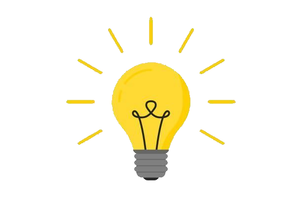

About Me
I am a rising senior at UMass Lowell. I am currently studying
computer science and am primarily interested in software
engineering. I love everything tech, finance, and soccer!
I am originally from Danvers, Massachussetts where I grew up
most of my life. From a young age, I always gravitated towards
electronics. As I grew older, my father gave me a computer and
the rest was history. I attended coding classes at my library and took
a strong interest in software development. Coupled with my obsession with
video games, I started to dabble in game development. Nearing the end of my
high school years, I decided to attend UMass Lowell as a computer science
student with the main goal of building the foundational knowledge required
so that I could become competent in the software engineering industry.
Interests
My primary interests include outdoor sporting activities, video games,
coding (and tech-related projects), and finance (investing). Of the many
outdoor activities that I play, I have always prioritized soccer. I started
playing when I was around six years old and played completitevely throughout
high school. I decided to stop formally playing after high school to prioritize
my career, however I am always playing on different clubs and teams throughout
Massachussetts. I have also taken a recent interest in tennis, however I am not
the best at playing. When I am with a large group of friends I also like to play
basketball. In regards to my interest in tech, I am currently working on some side
projects and learning new technologies related to full stack development as I have
a particular interest in the sub-field. I also like to keep up to date on investing
related news and actively try to save and invest in companies which I believe in the
long-term (mainly in the chip and tech industry).
| Sports |
Technology |
Finance |
| Soccer |
Web Development |
Budgeting |
| Basketball |
Coding |
Investing |
| Tennis |
Algorithms |
Saving |